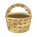

LA VACA LOCA / GUALACEO
ARCHIVO CULTURAL
La casa, las sesiones y los posters que construyen la memoria de La Vaca Loca.
Cargando contenido…

LA VACA LOCA / GUALACEO
La casa, las sesiones y los posters que construyen la memoria de La Vaca Loca.
Cargando contenido…